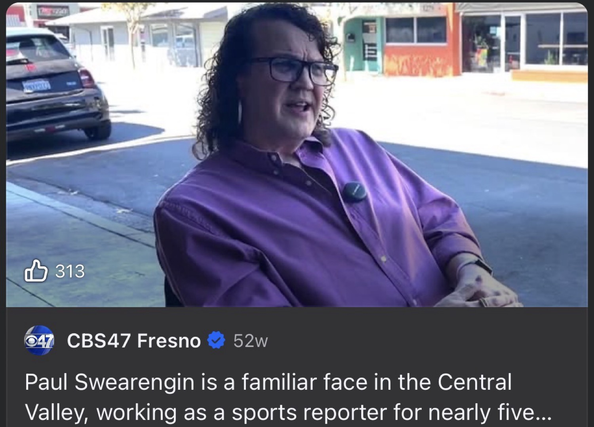
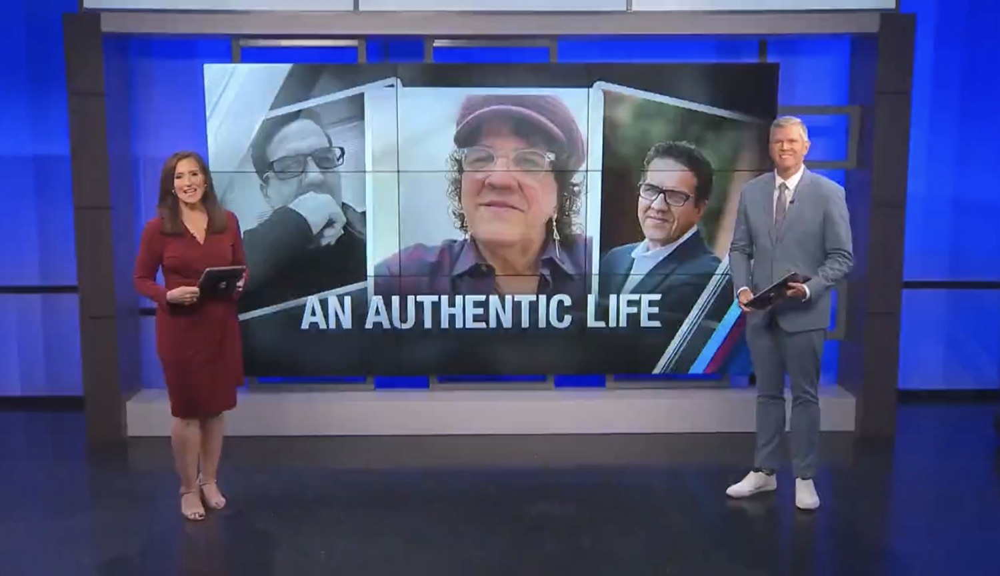
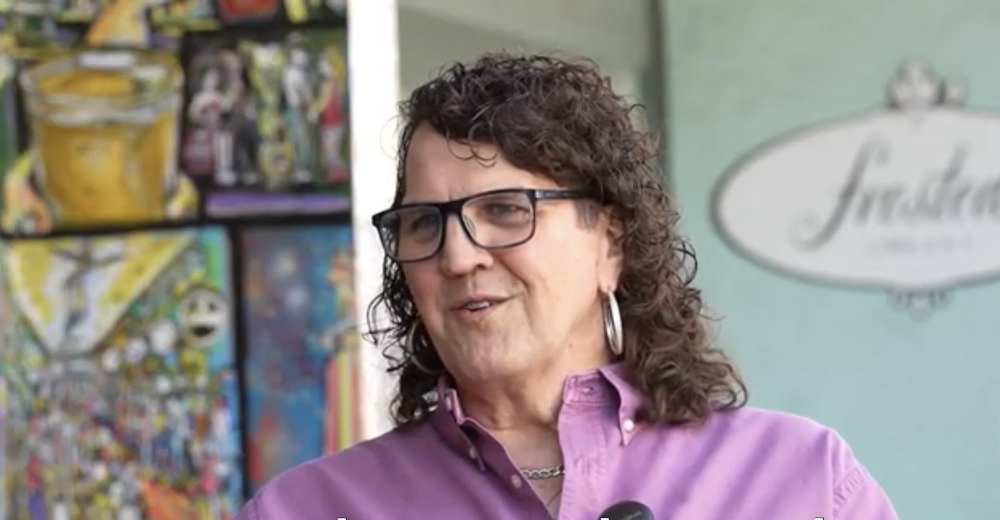
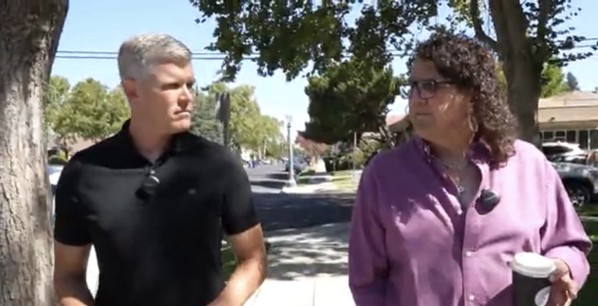
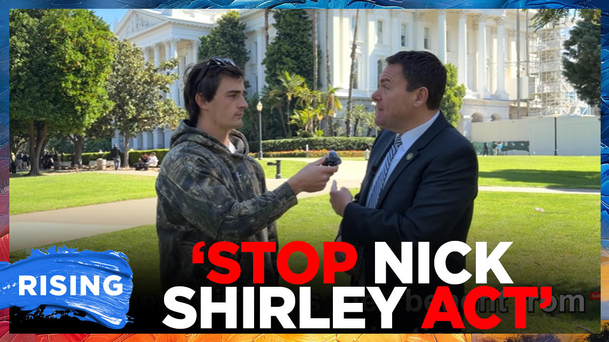

<!DOCTYPE html>
<html lang="en">
<head>
  <meta charset="UTF-8">
  <meta name="viewport" content="width=device-width, initial-scale=1.0">
  <title>Confluence in the Tower | High Tower District Stories</title>
  <meta name="description" content="Circumstantial signals of disorder, residual power, and protective optics along Fresno's Belmont corridor. The pattern that leaves few clean alternatives.">
  
  <!-- Open Graph -->
  <meta property="og:title" content="Confluence in the Tower">
  <meta property="og:description" content="When open-air markets, limited quality-of-life enforcement, residual mayoral influence, and high-visibility personal branding occupy the same ground, the story writes itself through confluence.">
  <meta property="og:image" content="images/paul1.jpg">
  <meta property="og:image:width" content="1200">
  <meta property="og:image:height" content="630">
  <meta property="og:image:alt" content="Public presentation and neighborhood context in the Tower District">
  <meta property="og:image:secure_url" content="images/paul1.jpg">
  <meta property="og:type" content="article">
  <meta property="og:url" content="https://aahigh.github.io/stories/tower-conflu/">
  
  <!-- Twitter -->
  <meta name="twitter:card" content="summary_large_image">
  <meta name="twitter:title" content="Confluence in the Tower">
  <meta name="twitter:description" content="Circumstantial signals of disorder, residual power, and protective optics along Fresno's Belmont corridor.">
  <meta name="twitter:image" content="images/paul1.jpg">
  
  <script src="https://cdn.tailwindcss.com"></script>
  <link href="https://fonts.googleapis.com/css2?family=Playfair+Display:wght@400;700;900&family=Inter:wght@400;500;600;700&display=swap" rel="stylesheet">
  <style>
    body { font-family: 'Inter', sans-serif; }
    h1, h2, h3, .serif { font-family: 'Playfair Display', serif; }
  </style>
</head>
<body class="bg-slate-50 text-slate-800 antialiased">

  <!-- Sticky Nav -->
  <nav class="sticky top-0 z-50 bg-slate-900/95 backdrop-blur text-white border-b border-slate-700">
    <div class="max-w-4xl mx-auto px-4 py-3 flex items-center justify-between">
      <a href="https://aahigh.github.io/stories/" class="font-semibold tracking-tight">High Tower District</a>
      <span class="text-xs text-slate-400">Civic Observation</span>
    </div>
  </nav>

  <!-- Hero -->
  <header class="bg-slate-900 text-white">
    <div class="max-w-4xl mx-auto px-4 py-16 md:py-24">
      <div class="inline-block px-3 py-1 mb-6 text-xs font-medium tracking-wider uppercase bg-blue-900/50 border border-blue-700 rounded-full">
        Tower District " August 2026
      </div>
      <h1 class="serif text-4xl md:text-5xl lg:text-6xl font-bold leading-tight mb-6">
        Confluence in the Tower
      </h1>
      <p class="text-xl md:text-2xl text-slate-300 max-w-2xl leading-relaxed">
        Open-air markets persist. Quality-of-life enforcement stays limited. Residual power maintains high-visibility personal branding in the same geography. The signals do not stand alone. Together they form a pattern with few clean alternative explanations.
      </p>
    </div>
  </header>

  <!-- Main -->
  <main class="max-w-4xl mx-auto px-4 py-12">

    <!-- Lead -->
    <section class="mb-16">
      <p class="text-lg leading-relaxed mb-6">
        Pattern recognition works by confluence. A single detail is noise. Walking gait plus facial structure plus context can identify a person when any one element alone is inconclusive. The same principle applies to civic environments. Isolated facts about street conditions, enforcement priorities, residual political influence, and cultural signaling can each be explained away. When they occupy the same ground at the same time, the number of coherent alternative explanations collapses.
      </p>
      <p class="text-lg leading-relaxed">
        This is an examination of that confluence along Fresnos Belmont corridor and the Tower District in August 2026. It does not claim secret crimes. It claims that the visible arrangement of disorder, limited aggressive misdemeanor enforcement, and high-visibility personal branding from a former mayors household produces a coherent story of complacency and protective optics. The story is stronger as a whole than any single part.
      </p>
    </section>

    <!-- Street Conditions -->
    <section class="mb-16">
      <h2 class="serif text-3xl font-bold mb-6 text-slate-900">1. The Ground Conditions</h2>
      <p class="leading-relaxed mb-6">
        Residents near the Belmont corridor and San Pablo Park describe persistent open-air drug activity, public use of non-marijuana controlled substances, hand-to-hand sales, and repeated low-level public-order violations. The area sits near addiction recovery services. Beautification projects (murals, Clean California grants, median work) have occurred. The underlying street market has not been eliminated.
      </p>
      <p class="leading-relaxed mb-6">
        City tools exist: anti-camping ordinances with treatment-or-jail options, code enforcement for litter and nuisance, loitering-for-drug-activity language. Practical application on the corridor remains selective. Overall citywide violent and property crime figures have shown year-over-year declines under Chief Mindy Casto in the first half of 2026. Those aggregate numbers do not erase the lived experience of open dealing and public use in specific blocks.
      </p>
      <div class="bg-white border border-slate-200 rounded-xl p-6 shadow-sm">
        <h3 class="font-semibold text-slate-900 mb-2">Observable Pattern</h3>
        <p class="text-sm text-slate-600">Persistent low-level disorder coexists with official claims of improving metrics and targeted operations elsewhere. The gap between available authority and sustained visible enforcement on quality-of-life and open-market activity is the first signal.</p>
      </div>
    </section>

    <!-- Enforcement -->
    <section class="mb-16">
      <h2 class="serif text-3xl font-bold mb-6 text-slate-900">2. Enforcement Limits</h2>
      <p class="leading-relaxed mb-6">
        Fresno Police Chief Mindy Casto, the departments first female chief, assumed the permanent role in early 2025 after interim service. Public statements emphasize response times, customer-service units, drone pilots, and focused strategies. Nighttime presence in the Tower District nightlife zone has increased for volatility and DUI. Targeted drug-trafficking operations occur on other corridors.
      </p>
      <p class="leading-relaxed mb-6">
        Aggressive, continuous enforcement of littering, public drug consumption outside marijuana, and open hand-to-hand sales on the Belmont stretch is less evident. Californias broader policy environment (Prop 47 reductions that limited leverage on many drug and theft offenses, political risk around over-policing optics, resource allocation) constrains local chiefs. Upstream state actors, including the Attorney Generals office, set the rules of engagement that local departments inherit.
      </p>
      <p class="leading-relaxed">
        From a strict law-and-order perspective that treats broken-windows enforcement as foundational, the selective application of available tools registers as a choice. The choice produces the second signal: disorder is tolerated at a level that would not be accepted in other commercial or residential zones with stronger political protection.
      </p>
    </section>

    <!-- Residual Power & Optics -->
    <section class="mb-16">
      <h2 class="serif text-3xl font-bold mb-6 text-slate-900">3. Residual Power and Public Presentation</h2>
      <p class="leading-relaxed mb-6">
        Former Mayor Ashley Swearengin (20092017) continues to hold regional influence through the Central Valley Community Foundation and related civic networks. Her husband, Paul Swearengin, has maintained a public personal brand centered on gender-fluid identity, authentic life framing, and spiritual/emotional coaching content. Local news segments and a TikTok presence under Unconventional Pastor Paul (six-figure follower range) make the presentation visible.
      </p>

      <div class="grid grid-cols-1 md:grid-cols-2 gap-4 mb-8">
        <figure>
          
          <figcaption class="text-xs text-slate-500 mt-2">Public interview appearance, Belmont-area context.</figcaption>
        </figure>
        <figure>
          
          <figcaption class="text-xs text-slate-500 mt-2">Local news framing as An Authentic Life.</figcaption>
        </figure>
        <figure>
          
          <figcaption class="text-xs text-slate-500 mt-2">Public speaking appearance in the district.</figcaption>
        </figure>
        <figure>
          
          <figcaption class="text-xs text-slate-500 mt-2">Neighborhood walking interview near residential streets.</figcaption>
        </figure>
      </div>

      <p class="leading-relaxed mb-6">
        The third signal is proximity plus presentation. A household connected to past mayoral power lives in or near an environment of open disorder while projecting acceptance and authenticity. In a neighborhood where residents confront daily addiction markets and code violations, that projection functions as cultural permission. It is not evidence of personal criminality. It is evidence of residual influence that does not treat the street conditions as an emergency requiring discretion or confrontation.
      </p>
      <p class="leading-relaxed">
        When the same cultural environment that elevates identity presentation also resists aggressive quality-of-life enforcement, the optics align. Inclusiveness language becomes available as an emotional shield against criticism of the status quo. The shield works whether or not any private corruption exists. It raises the social cost of asking why the open market continues.
      </p>
    </section>

    <!-- Broader Pattern -->
    <section class="mb-16">
      <h2 class="serif text-3xl font-bold mb-6 text-slate-900">4. Upstream Protective Structures</h2>
      <p class="leading-relaxed mb-6">
        The local pattern sits inside a larger California arrangement. The Attorney Generals office under Rob Bonta has faced documented questions about campaign donations from figures later charged in federal corruption probes, large campaign expenditures on private counsel related to those probes, and legislative activity by his spouse (Mia Bontas AB 2624, labeled by critics the Stop Nick Shirley Act) that expands confidentiality protections around immigration-support providers. Independent journalists confronting that legislation received non-answers and, in one case, crude personal disruption.
      </p>

      <div class="grid grid-cols-1 md:grid-cols-2 gap-4 mb-8">
        <figure>
          
          <figcaption class="text-xs text-slate-500 mt-2">Mia Bonta and Attorney General Rob Bonta.</figcaption>
        </figure>
        <figure>
          
          <figcaption class="text-xs text-slate-500 mt-2">Independent journalist Nick Shirley confronting California Democrats over AB 2624.</figcaption>
        </figure>
      </div>

      <p class="leading-relaxed mb-6">
        Local elected figures (District 3 representation covering the Tower District, succession dynamics involving Joaquin Arambula) operate inside the same political culture. Conflict-of-interest complaints, developer allegations, and soft accountability on contracts and process recur. The cumulative effect is a system that protects appearances and raises the cost of sustained independent scrutiny.
      </p>
      <p class="leading-relaxed">
        This is the fourth signal: upstream rules and cultural norms that make aggressive local enforcement politically expensive while providing ready language (inclusiveness, authenticity, progressive virtue) to deflect criticism of disorder.
      </p>
    </section>

    <!-- Confluence -->
    <section class="mb-16">
      <h2 class="serif text-3xl font-bold mb-6 text-slate-900">5. The Confluence</h2>
      <p class="leading-relaxed mb-6">
        None of these elements alone proves hidden criminal enterprise. Street disorder can be resource failure. Selective enforcement can be prioritization. Personal branding can be private identity. Political opacity can be ordinary self-protection. 
      </p>
      <p class="leading-relaxed mb-6">
        Together they form a tighter set. Open markets continue in a corridor near recovery services. Available enforcement tools are not applied with sustained aggression on the exact behaviors that degrade the corridor. A former mayors household maintains high-visibility personal presentation in the same geography while the market persists. State and local political culture supplies both the constraints on enforcement and the emotional vocabulary that frames criticism as intolerance. 
      </p>
      <p class="leading-relaxed mb-6">
        The number of clean alternative explanations shrinks. The arrangement is consistent with a permission structure in which disorder is tolerated when it does not threaten the right constituencies, residual influence is not required to model order, and identity presentation functions as both personal expression and protective optics. Whether any private corruption exists behind the presentation is secondary. The public effect is the same: the status quo is defended by emotional fallacy while the street conditions remain.
      </p>
      <div class="bg-slate-900 text-white rounded-xl p-8">
        <p class="text-lg leading-relaxed">
          Pattern recognition does not require a single smoking gun. It requires the confluence of signals that leave few coherent alternatives. Residents who live with the open market, the selective enforcement, and the residual branding are not required to pretend the arrangement is accidental or benign. They are entitled to name the pattern and demand the works that match the claims of goodness and order.
        </p>
      </div>
    </section>

    <!-- Sources -->
    <section class="mb-16 border-t border-slate-200 pt-12">
      <h2 class="serif text-2xl font-bold mb-6 text-slate-900">Sources & Context</h2>
      <ul class="space-y-3 text-sm text-slate-600">
        <li>Fresno Police Department public statements and crime statistics, first half 2026 (Chief Mindy Casto).</li>
        <li>Fresno Bee and local reporting on Tower District nightlife presence, anti-camping ordinances, and Belmont corridor beautification projects.</li>
        <li>California State Controller and SF Chronicle compensation data on top-paid state employees (CalPERS, CDCR, CHP).</li>
        <li>Public reporting on AB 2624 (Mia Bonta), Nick Shirley confrontations, and Newsom signature, August 2026.</li>
        <li>Prior reporting on Rob Bonta campaign donations, legal expenditures related to East Bay federal probes, and returned contributions.</li>
        <li>Public news segments and social media presence of Paul Swearengin / Unconventional Pastor Paul.</li>
        <li>Fresno Municipal Code provisions on loitering for drug activity, camping, and public nuisance.</li>
      </ul>
      <p class="mt-6 text-xs text-slate-500">
        This piece is circumstantial analysis of public signals and documented constraints. It does not allege specific private criminal acts by any named individual beyond what public records already establish. The argument is that the confluence itself is the evidence requiring explanation.
      </p>
    </section>

    <!-- Close -->
    <section class="mb-12">
      <h2 class="serif text-2xl font-bold mb-4 text-slate-900">Closing</h2>
      <p class="leading-relaxed mb-4">
        Public safety is not advanced by treating every discomfort as hate speech or every pattern as coincidence. It is advanced by refusing the emotional fallacy that equates criticism of disorder with intolerance, and by insisting that residual power and high-visibility branding in a degraded corridor carry a higher duty of discretion and works. The alternative explanations exist. They require more strain to hold once the signals are viewed together.
      </p>
      <p class="leading-relaxed text-slate-600">
        High Tower District Stories exists to put the confluence on the record so that residents are not required to accept the status quo as the only available reality.
      </p>
    </section>

  </main>

  <footer class="bg-slate-900 text-slate-400 py-8">
    <div class="max-w-4xl mx-auto px-4 text-center text-sm">
      <p>High Tower District Stories " Fresno, California</p>
      <p class="mt-2">Independent observation. Not affiliated with any political campaign or office.</p>
    </div>
  </footer>

</body>
</html>
